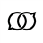

設定項目
投稿の翻訳方法と、端末に保存するデータを管理します。
0.8Bは同梱モデルです。2Bを使うには、モデルを追加してから選択します。
2Bをダウンロードするか、取得済みのGGUFファイルを取り込みます。
Built with PLaMo · PLaMoコミュニティライセンス
選んだ用語集から合計20組まで適用できます。
新しく作るか、登録済みの用語集を選んで原語と訳語を編集します。
保存済みの訳文を再利用して、同じ投稿の再翻訳を減らします。
保存済みの翻訳キャッシュをすべて削除しますか？